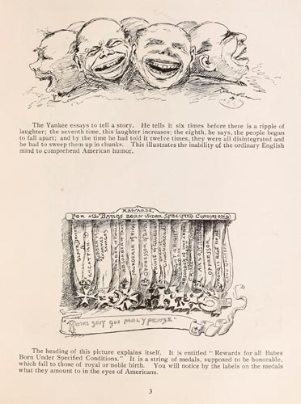

|  |
The Yankee essays to tell a story. He tells it six times before there is a ripple of laughter; the seventh time, this laughter increases; the eighth, he says, the people began to fall apart; and by the time he had told it twelve times, they were all disintegrated and he had to sweep them up in chunks. The illustrates the inability of the ordinary English mind to comprehend American humor. The heading under this picture explains itself. It is entitled "Rewards for all Babes Born Under Specified Conditions." It is a string of medals, supposed to be honorable, which fall to those of royal or noble birth. You will notice by the labels on the medals what they amount to in the eyes of Americans. |